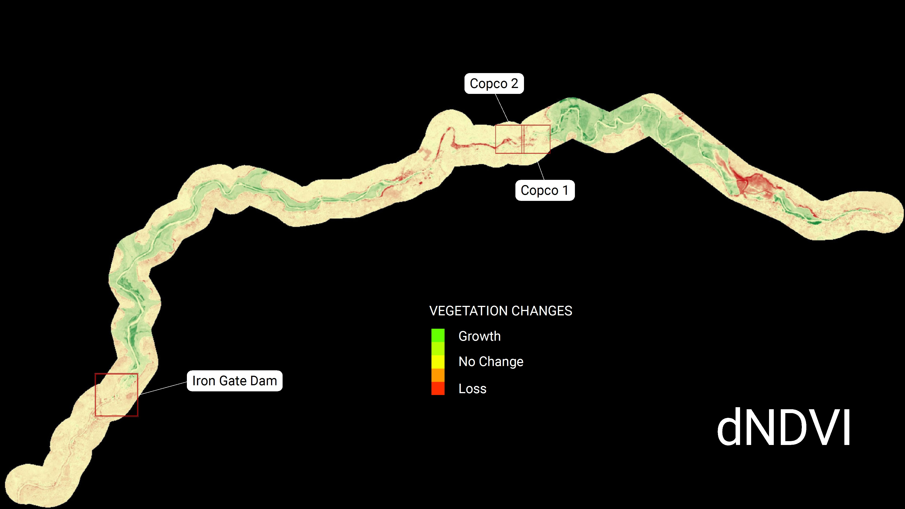

P A O N A S K A R
MASTERS'S STUDENT IN GEOGRAPHY AT THE UNIVERSITY OF COLORADO BOULDER

About Me
Hello there, welcome to my portfolio!
I am a master's student in Geography and Teaching Assistant at the University of Colorado Boulder, focusing on GIS, remote sensing, LMs, and conflict studies. I have so many interests, but I'm primarily focused on how technology plays a role in contemporary conflict (from insurgency to interstate) and how it can be used to better understand conflict, humanitarian risks, and government accountability. I received my BA in International Affairs in 2026 with a focus in Foreign Policy & Political Geography. However, I also spent much time building a foundation in GIS & Data Science, which I continue to try to interwine with my international affairs research! I also graduated with Latin Honors (Summa) at the cost of a thesis on AI & Drone use in contemporary kill chains (yeah, this research still haunts me). I'm currently pursuing geography because there's something captivating about GIS/geography and its ability to probe the world(s) around us...
And yes! Not all I do is academic fortunately (can you tell by all the images of Longs Peak??)! I also have many hobbies (too many?): Cycle/Downhill/XC MTB, Ice/Rock/Mtn Climbing (I guide too), Ski Alpine/Tour, Back/Fastpacking, and pretty much most things outdoors (except fishing; too low cortisol, I'm sorry). In the future, I'd like to try to get back into tri and eventually would like to hike-n-fly ($$$)! Say hi if you catch me in the mountains!
Relationship with Earth Sciences:
- Background in GIS & Remote Sensing
- Interest in Environment and Climate Change
- I'm a #contributer in Earth Analytics Data Science Bootcamp F26
Portfolio Overview
Projects Started
Projects In Progress
Projects Completed
Hours Spent on Portfolio
Previous Projects
-

Using Sentinel 2 to Map Riparian
Changes along the Klamath River - Project Completed!
- text here
- text here
- text here
-
BIG NUMBER HERE
text here
-
YOLO and Satellite Imagery
Tiling for Aircraft Recognition - WIP!
- text here
- text here
- text here
-
text here
text here